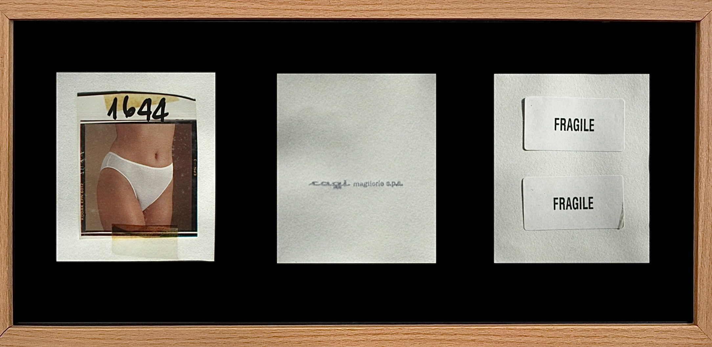
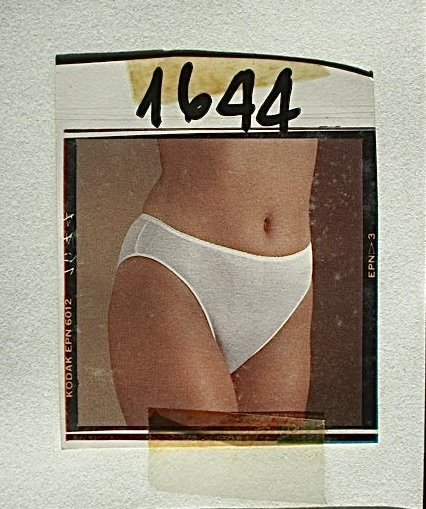
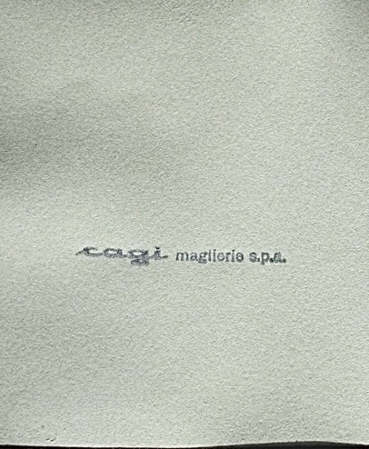
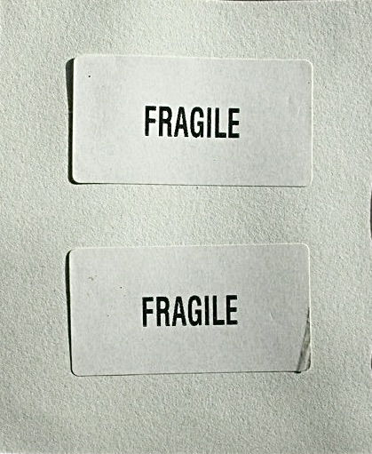

Il Secondo Stipendio
- Oggetti rinvenuti
- 52 × 25 cm
Il Secondo Stipendio nasce in concomitanza con la demolizione dell’ex stabilimento Cagi Maglierie, uno degli edifici storici di Motta Visconti, che dal 1957 ha occupato il centro del paese. Dopo la chiusura dell’attività, l’edificio è rimasto abbandonato per anni, diventando una presenza silenziosa ma costante nel paesaggio urbano e nella memoria collettiva. La Cagi ha rappresentato una parte importante dello sviluppo economico del territorio e, soprattutto, dell’emancipazione femminile locale: la maggior parte della forza lavoro era infatti composta da donne, per le quali lo stipendio costituiva spesso un secondo reddito fondamentale per il sostentamento della famiglia.
Prima della sua completa demolizione, e della successiva costruzione di un supermercato, ho avuto la possibilità di visitare per un’ultima volta lo stabilimento e raccoglierne alcuni frammenti, trasformandoli in una testimonianza materiale della sua esistenza. A questa ricerca si affianca una serie di interviste ad alcune ex dipendenti della Cagi, che hanno condiviso i ricordi dei loro anni di lavoro e il significato che quell’esperienza ha avuto nelle loro vite. Il progetto riflette sul ruolo del lavoro nell’emancipazione femminile e nella costruzione del benessere familiare, ma anche sulle conseguenze della progressiva scomparsa della manifattura italiana, della delocalizzazione produttiva e sull’abbandono degli spazi industriali, che si trasformano in nuovi “terzi paesaggi”.



